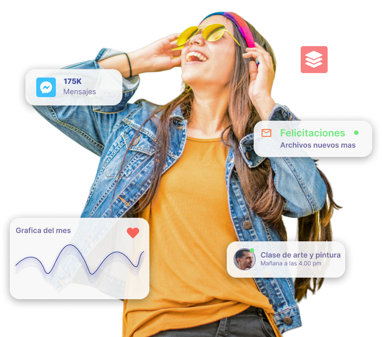
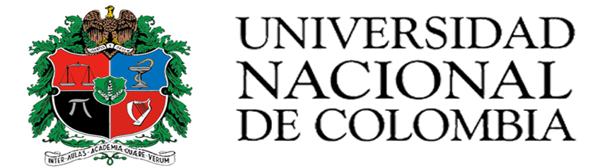
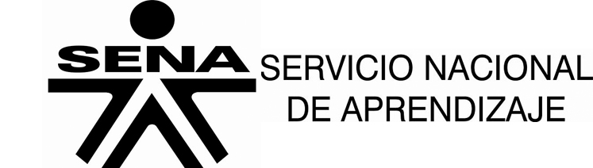
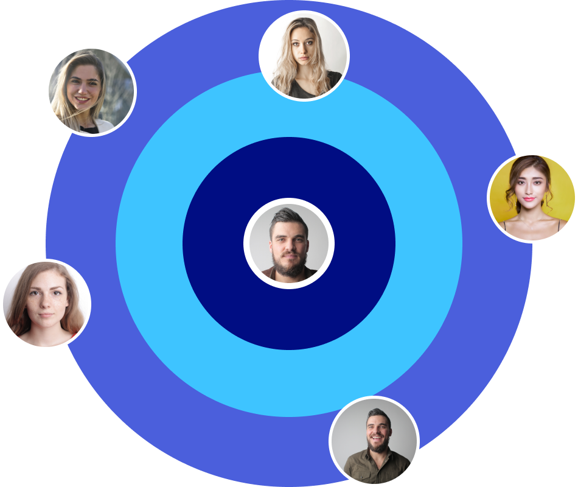

Ofrecemos a las instituciones educativas la solución perfecta para la emisión de certificados y títulos digitales, garantizando su autenticidad, integridad y disponibilidad en todo momento. Estos documentos se almacenan en una red descentralizada y segura, lo que permite su verificación instantánea por parte de empleadores, otras instituciones académicas y cualquier entidad interesada, eliminando la necesidad de intermediarios. Simplifica el proceso y asegura la confianza en cada documento emitido. ¡Transforma la forma en que tu institución gestiona la certificación académica y da un paso hacia el futuro de la educación digital!
Contacto
Instituciones
Publicas y privadas


Bachiller, Tecnico, Tecnológo, Pregrado, Posgrado, Maestrías, Doctorados El nivel de pregrado tiene, a su vez, tres niveles de formación: Nivel Técnico Profesional (relativo a programas Técnicos Profesionales). Tecnológico (relativo a programas tecnológicos). Profesional (relativo a programas profesionales universitarios). La educación de posgrado comprende los siguientes niveles: Especializaciones (relativas a programas de Especialización Técnica Profesional, Especialización Tecnológica y Especializaciones Profesionales). Maestrías. Doctorados.
Nuestro enfoque se centra en facilitar la validación y verificación de las habilidades adquiridas por los individuos, brindándoles una prueba concreta y confiable de su progreso. Esto les permite destacarse tanto en el ámbito laboral como académico, al tiempo que permite a las organizaciones identificar talento calificado de manera más eficiente.

¡No esperes más! Contáctanos a través de WhatsApp y descubre cómo podemos ofrecerte un servicio totalmente personalizado y eficaz. Nuestro equipo está listo para ayudarte a resolver tus necesidades de manera rápida y profesional. ¡Escríbenos ahora y recibe la atención que mereces!